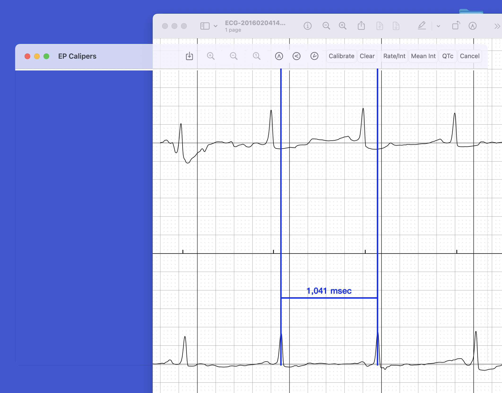

Images
Images
Loading an image
Open command
Use the File | Open or File | Open Recent menu commands to select an image stored on your computer.
Drag and drop
You can drag and drop an image file onto the app window and it will load.
Right click menu
Even when EP Calipers is not open, you can use the right click menu to open an image file. The right click menu is opened either by right clicking on a file if you have a mouse, or using the left mouse button with the Control key held down, or, if you have a track pad, two-finger tapping on the trackpad. After selecting Open With a list of apps will appear. EP Calipers will be on the list of apps that can open the image. Click it and the app will start with the loaded image. This method is especially useful for opening email attachments.
Multi-page PDFs
If you load a PDF file with multiple pages, the first page will be shown initially. You can use the Image | Previous Page and Next Page menu items to change pages, or the ^P and ^N (Control-P and Control-N) keys on your keyboard. Use Image | Go to page to jump to a specific PDF page.
Opening AliveCor™ ECGs
AliveCor ECGs can be saved as PDF files. Load them with any of the above methods.
Adjusting the image
Moving the image
If you have a track pad, you can move the image around using two finger scrolling. You can also scroll using a mouse.
Rotation
If your ECG image is rotated or tilted, use the Image | Rotation menu commands to correct this. You can rotate by 90°, 1°, or 0.1° increments in either direction. The keyboard shortcuts for rotation are useful. Important: You should rotate your image before calibrating your calipers or making measurements. Once an image has been calibrated, rotation will affect the accuracy of the calibration. For this reason, you can only rotate an image before you calibrate. If you need to rotate the image after calibration, you will need to clear calibration (using Clear on the toolbar or the Calipers | Clear menu command) before you can rotate.
Zooming
If you have a trackpad, pinch to zoom works. You can also use the Zoom Toolbar to zoom in and out, or to set the image to its actual size. Zooming is also available in the Image menu. Note that caliper calibration does adjust with zooming. There is no need to recalibrate the calipers after zooming.
Transparent windows
What is transparent window mode?
Sometimes it is easier to open an image or PDF file on your Desktop using the Preview app, and then make measurements directly on this image. EP Calipers allows you do this using transparent window mode. In this mode, the main window is transparent, allowing you to measure whatever is underneath the window using calipers. Transparent window mode looks like this:

Figure 1: Transparent window mode
Activating transparent window mode
You can quickly toggle between transparent window mode and normal mode using the Image | Transparent Window menu item or its keyboard shortcut Control-H. If you want the app to start up in transparent window mode, use the EP Calipers | Settings menu item to display the Settings dialog. Check the Transparent window checkbox to change to transparent window mode. Press OK and this setting will persist when you reopen the app. Uncheck the check box to return to normal image mode.
Things to watch out for with transparent windows
When you load an image into EP Calipers the normal way and calibrate your calipers, the program will automatically adjust the calibration factor when you zoom the image. In transparent window mode, the program has no clue if you zoom the underlying image that the calibration is now incorrect. Take care to recalibrate your calipers if you zoom your image in a program external to EP Calipers. Also note that if you run EP Calipers in full screen mode, transparent window mode won't work, since there is no Desktop under the window in full screen mode. Finally, if you open a file while in transparent window mode, a dialog will appear asking if you wish to leave transparent window mode in order to load the image file.
Saving an image from EP Calipers
Use the Mac system screenshot functions if you wish to save an image from EP Calipers. Command-Shift 3 takes a screenshot of your entire desktop. Press Command-Shift 4 and then Space to set up taking a screenshot of a window on the desktop. Click the camera icon on the EP Calipers window. Press the Escape (esc) key to cancel a screenshot.